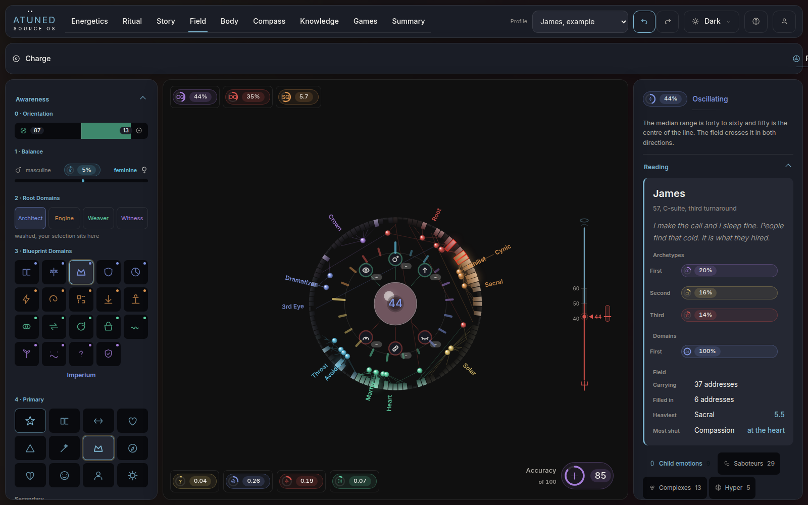
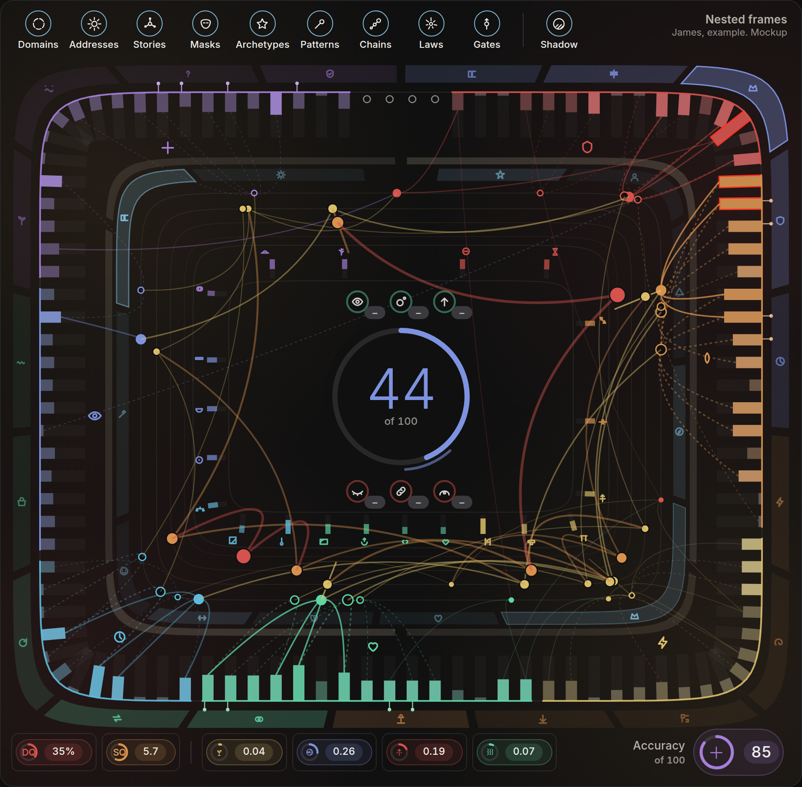
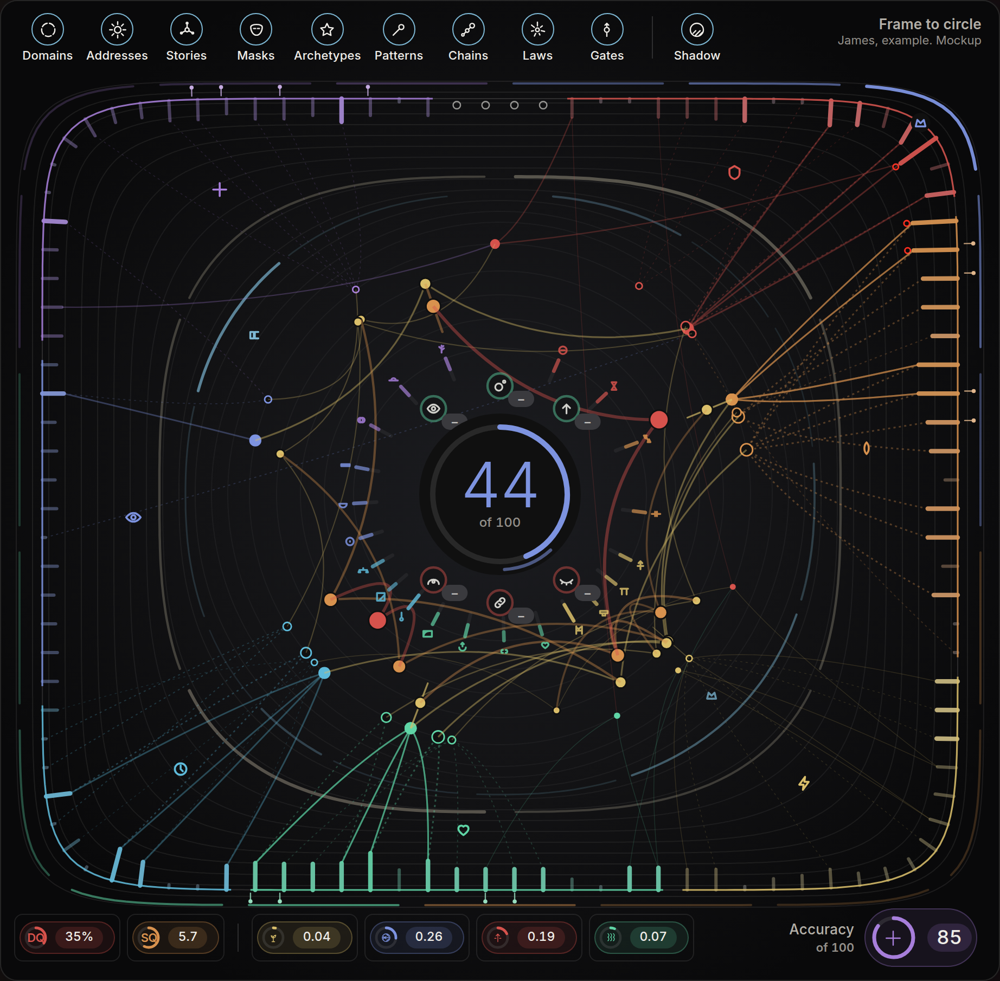
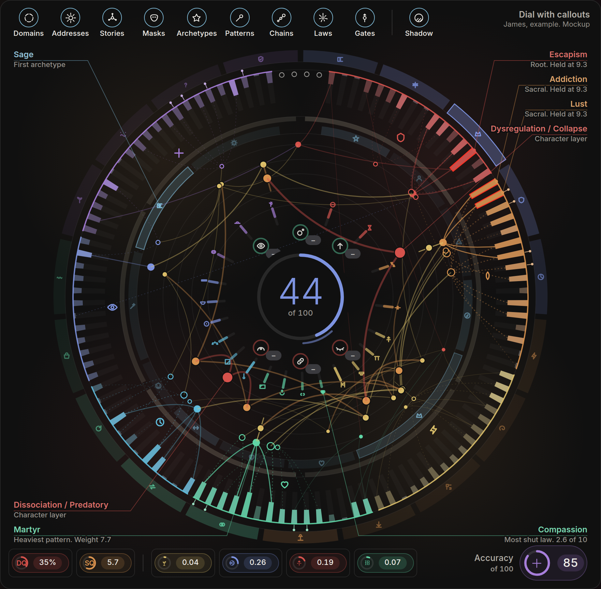
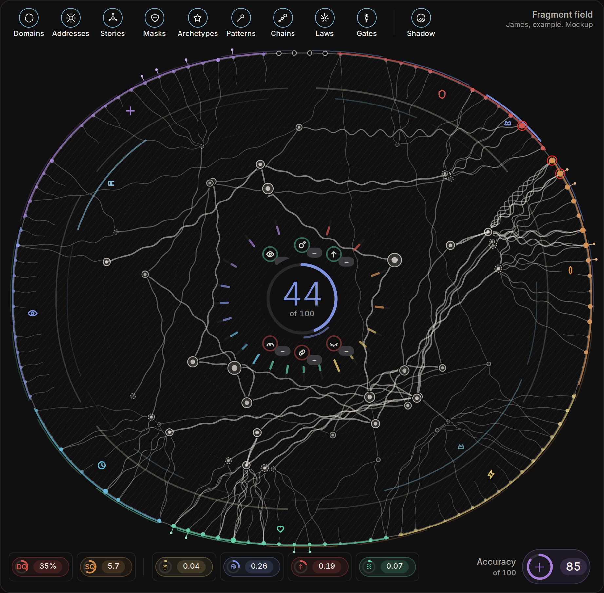
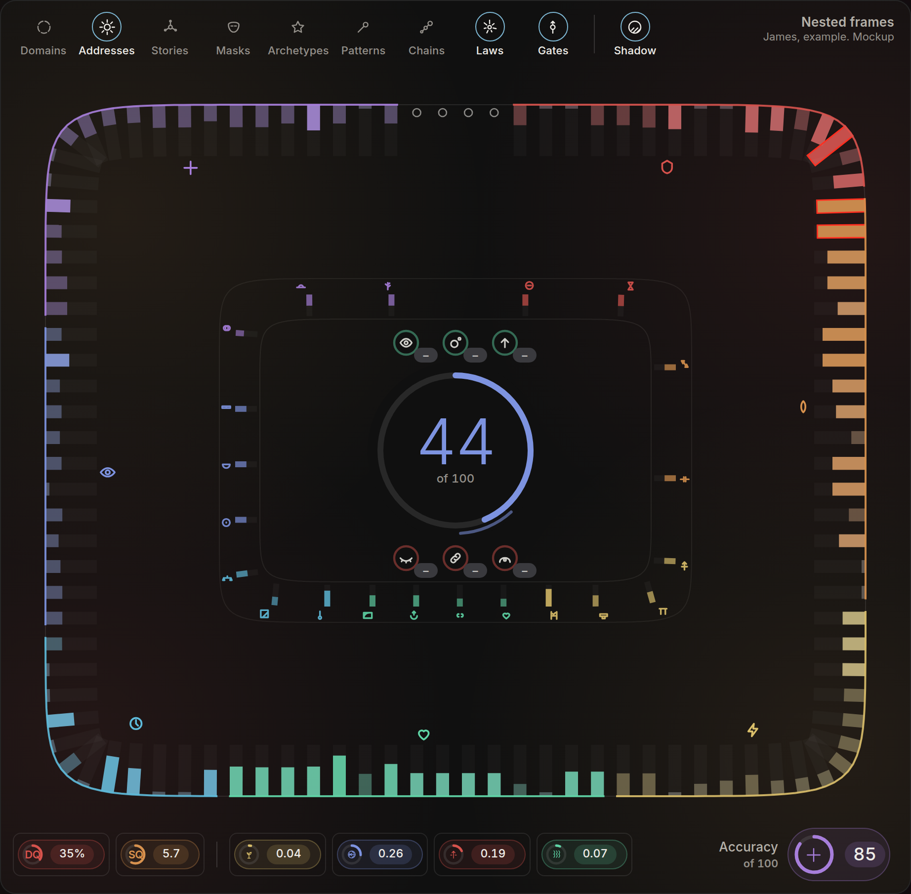
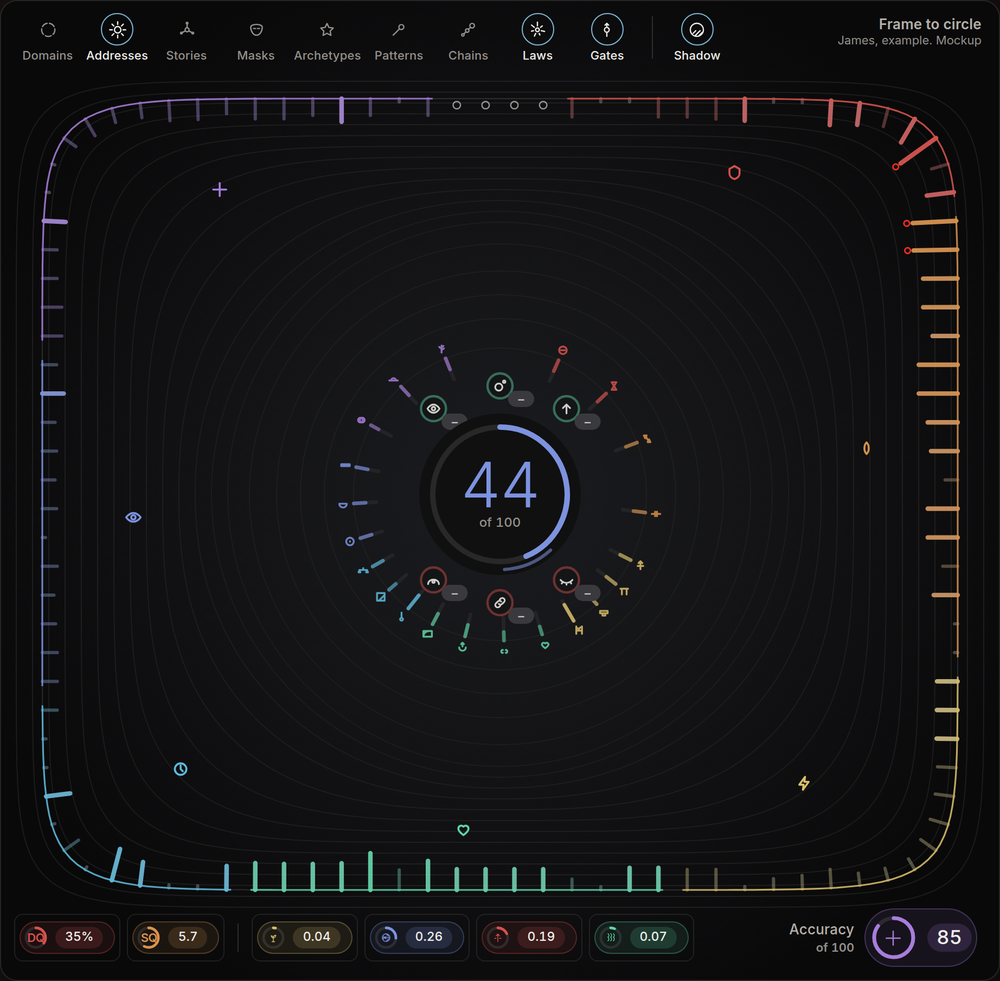
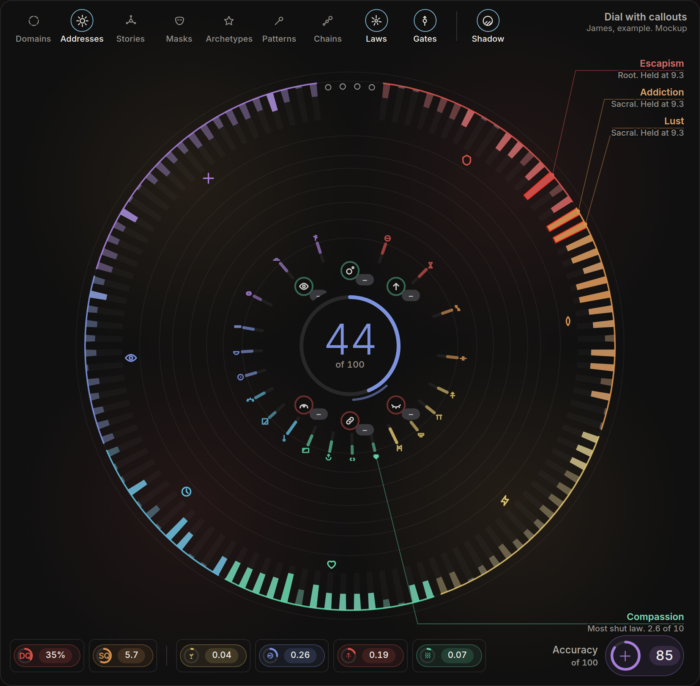
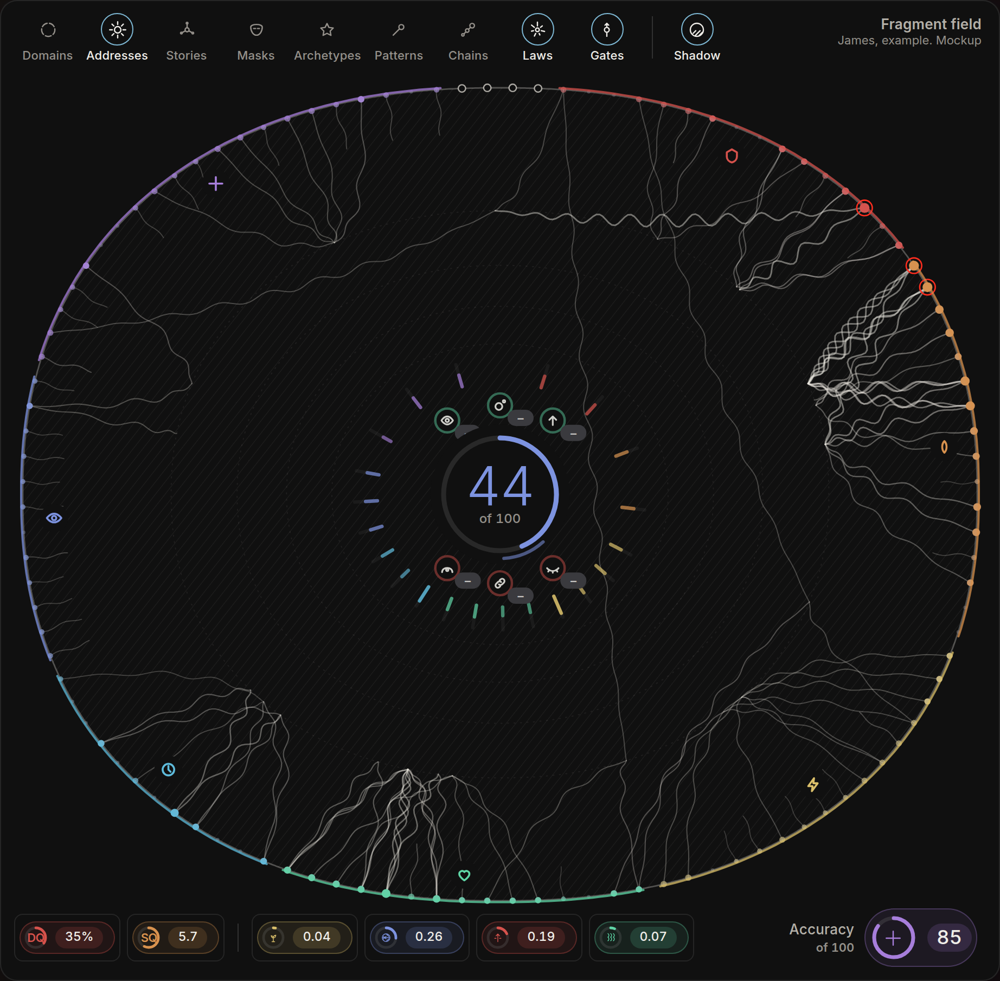

James, a reference profile, with his own five story bank lines committed. Every layer on. Desktop, 1600 wide, Dark. Mockups for choosing a direction.

A wheel sized to a canvas inside the stage, with zoom to reach the deeper layers and a depth bar above it.

Every ring takes the stage's own shape, a rectangle inside a rectangle. Charge reads as bars standing in from the frame. The core is the one circle.

The outer ring is the rectangle and each ring inward is rounder, until the core is a circle. Drawn in hairlines, lit from the centre.

The circle at full size, every layer at its own radius. The corners the circle leaves free carry the names, on leader lines.

After field notes 18 and 19. One boundary that never moves; each held address sends a fragment in, and the fragments knot toward the centre.
Addresses, laws, gates and shadow on. Domains, stories, masks, archetypes, patterns and chains switched off with the toggles. A Field with no zoom has to hold at rest as well as at full load.



